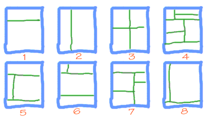
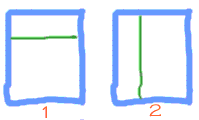
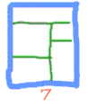
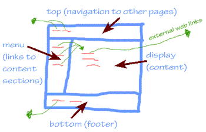

26. Framed Web Pages
| Cop: |
"Web Page, You've Been Framed!" |
| Web Page: |
"That's Ok! Now I can really control my content! Just keep your eye on the top of this screen as you move down with the right side scroll bar.." |
Objectives
After this lesson you will be able to:
- Create a web page that consists of multiple frames
- Write hypertext links to load content into a specified area of a framed web page
- Write hypertext links that will load content into a page replacing the framed web page
- Modify the border attributes of a framed web page
Lesson
Note: If you do not have the working documents from the previous
lessons, download a copy now.
You likely have seen web pages that use frames. If you have not already figured it out, this very page uses frames-- if you scroll down through the page for this lesson, the links in the pale orange area at the top of the page stay fixed. It is in a separate frame from the bottom portion.
Frames make this web page two different HTML documents-- one document defines the layout for the top portion with the navigation links, and the other contains the remainder of this lesson. Each frame is independent of each other.
The advantage is clear for web sites that contain navigation links to many other web pages. For another example, see our Multimedia Authoring Web, a searchable database that keeps all of the navigation and control elements in the left frame while content is displayed in the right side.
Hyperlinks have special uses in framed web pages. Sometimes a hyperlink in one frame will replace the content in that frame with new content. Other times a hyperlink will load new content in another frame. And you can have links that will completely replace all of the frames with a new page. This is actually the same kind of link "targeting" we learned in lesson 25.
What are some disadvantages of frames? As a web designer, you must keep track of more HTML documents. When converted to a framed design, one single HTML file might end up as 3,4, or maybe 12 HTML files. For the viewer, a framed page can take longer to load and display. Poorly designed, framed web pages look crowded and sometimes amateurish. Frames also make it difficult to print paper copies of the entire page. Finally, you may be restricting some users from your site if they have a web browser that does not support frames (most browsers since NetScape 2.0 and Internet Explorer 3.0 display frames).
When should you use frames? The content should tell you. If there is a need to keep some elements on a web page visible at times while changing the content of other areas, frames can be effective. You can get a better sense by examining other web sites and see how they use frames.
Frame Basics
A web page that uses frames consists of a "master" HTML document, that we'll call the "blueprint" for the layout, that defines the framesets, or the arrangement of the framed areas on the page. This is the document that loads the frame structure and the one that represents the URL for the framed page.
You can devise many ways to slice and dice the web page area:

Each of the sub-divided areas will be associated with an HTML file that defines what goes into that particular box. Therefore, the first step is to sketch out how the page should be divided up and how much relative space each area needs.
Once you have a visual idea, you must define it in terms of rows and columns, similar to the approach for designing tables (see lesson 21). Start working from the upper left to the lower right.
Looking at the sketches above, example 1 is made of 2 rows and example 2 contains 2 columns. Example 3 can be seen either as two rows, each containing two columns, or 2 columns, each of which contains two rows.
Are you still with us? Example 5 can be seen as three rows, where the middle row has two columns. So is Example 6 except that first row is the one with two columns.
Now, look carefully at example 7. It is divided into 2 rows. The lower row contains 2 columns, each of which contains two rows of differing proportions.
Each collection of rows and columns makes up an HTML frameset and the HTML "blueprint" document for the framed page can have one or more framesets. The HTML format is slightly different from the ones we've created so far-- it lacks a set of <body>...</body> tags. This make sense from what we learned way back in lesson 1 since none of the frameset definitions actually specify the content that appears on the web page (normally everything inside the <body>...</body> tags,) but rather the structure of how they are arranged.
Below is a generalized format for a "blueprint" HTML document:
<!doctype html public "-//W3C//DTD HTML 3.2 Final//EN">
<html>
<head>
<title>Title of this Whole Page</title>
</head>
<FRAMESET ROWS/COLS="X,Y,...Z">
<FRAME SRC="frame_source1.html">
<FRAME SRC="frame_source2.html">
:
:
<FRAME SRC="frame_sourceN.html">
</frameset>
<NOFRAMES>
This is what someone would see who does not have a web
browser that can display frames.
</NOFRAMES>
</html>
NOTE: Each frameset defines either a set of rows or columns (either <FRAMESET ROWS=...> or <FRAMESET COLS=...>). The values of X, Y, and Z indicate the amount of screen area each row/column will occupy, either in percentages of the browser window size, or an absolute number of pixels. The number of items in this list defines the number of rows or columns. For each row/column specified, this dimension is associated with the HTML document specified in the subsequent list of <FRAME SRC=...> tags.
A browser that cannot display frames will ignore everything between the <FRAMESET> ... </frameset> tags and display what is inside of the <NOFRAMES> ... </NOFRAMES> tags. On the other hand, web browsers that can display framed content will ignore what is inside the <NOFRAMES> ... </NOFRAMES> tags.
The most challenging part of designing framed web site is developing the layout structure of this main document. To repeat, the numbers that you provide in the <FRAMESET...> tag, indicate the number of and the dimensions of a set of rows or columns in the page. You can use either percentages (i.e. ROWS=10%,30%,60%) or absolute numbers of screen pixels (i.e. COLS=100,300,80,200). The choice of this depends on whether the design requires a particular frame to always be the same size (use absolute pixels) or if it can scale to the proportions of the viewer's browser window (use percentages). You will see more examples as we go along.
So let's see how some examples might look. Referring again to our example sketches,

we might write the page for example 1 as:
<!doctype html public "//W3C//DTD HTML 3.2 Final//EN">
<html>
<head>
<title>A Two Row Framed Page</title>
</head>
<FRAMESET ROWS="15%,85%">
<FRAME SRC="frame_source1.html">
<FRAME SRC="frame_source2.html">
</frameset>
<NOFRAMES>
This is what someone would see who does not have a web
browser that can display frames
</NOFRAMES>
</html>
We could easily modify this document to create the layout of example 2 by changing ROWS= to COLS=. In either of these cases, if the viewer shrinks or expands their web browser window, the areas of the frames will adjust according to the percentages provided. If you wanted to fix a frame at an absolute width, say in example 1 to have the top row to always be 100 pixels high, you would change the tag to read:
<FRAMESET ROWS="100,*">
NOTE: The "*" or "wildcard" value for the dimension tells the web browser to use what ever space is left for the bottom row.
Now let's look at a more complex frame document, the one that would define example 7:

<!doctype html public "//W3C//DTD HTML 3.2 Final//EN">
<html>
<head>
<title>A More Complex Framed Page</title>
</head>
<!-- two main rows -->
<FRAMESET ROWS="120,*">
<!-- row 1 is a single doc -->
<FRAME SRC="row1.html">
<!-- two main columns in row 2 -->
<FRAMESET COLS="75%,25%">
<!-- two rows in first column -->
<FRAMESET ROWS="60%,40%">
<FRAME SRC="row2col1row1.html">
<FRAME SRC="row2col1row2.html">
</frameset>
<!-- two rows in second column -->
<FRAMESET ROWS="100,*">
<FRAME SRC="row2col21row1.html">
<FRAME SRC="row2col21row2.html">
</frameset>
</frameset>
</frameset>
<NOFRAMES>
This is what someone would see who does not have a web
browser that can display frames
</NOFRAMES>
</html>
NOTE: This web page requires 6 different HTML files to display; one blueprint document with the HTML code above plus 5 more HTML documents that make up the content as defined by the <FRAME SRC...> tags. Carefully compare the diagram with the "nesting" of the multiple <FRAMESET ... > tags.
Yes, it gets complicated! And... you will learn even more things you can do with the HTML code for frames as you work through the examples below.
Now let's work on our Volcano Web site. The page we had created so far for the Research project page, proj.html has three different sections:
- a description of the project;
- a list of web site references; and
- a bibliography
We are now going to use frames to convert this single page to a framed version shown in the diagram below.
|

|
The top frame will contain the navigation links to the other pages of our site. Links from this page must replace the entire frame page. The bottom frame will contain our standard page footer, and any links from this area must also replace the entire frame page.
The left frame in the middle row will contain hyperlinks to the three different parts of the original project page. The hyperlinks from here should load content into the frame to the right. The content for the three sections will be displayed in the right frame in the middle row. Any hyperlinks from this area will jump to external web sites that we will load into a new browser window.
|
This design allows us to break up the project page into more discrete chunks; for now they are small chunks, but perhaps you could see how this might be useful if we had much more content for each section.
Here are the steps to make the framed version of the projects page.
- Change the name of the proj.html file to proj-noframes.html. This will be the page we will send viewers to if they have a browser that cannot display frames.
- Create a new file in your text editor and save it as proj.html. This will be the frame layout page. Enter the following HTML into this file:
<!doctype html public "-//W3C//DTD HTML 3.2 Final//EN">
<html><head>
<title>Project</title></head>
<FRAMESET ROWS="45,*,150">
<FRAME NAME="top" SRC="proj_nav.html" scrolling="no">
<FRAMESET COLS="24%,*">
<FRAME NAME="menu" SRC="proj_menu.html">
<FRAME NAME="display" SRC="proj_descrip.html">
</FRAMESET>
<FRAME NAME="bottom" SRC="proj_footer.html" scrolling="no">
</FRAMESET>
<NOFRAMES>
<h2 align=center>NOTE: This site uses frames, but apparently your
browser does not support this feature. Try the
<a href="proj-noframes.html">alternative</a> page.</h2>
</NOFRAMES>
</html>
NOTE: This frameset is set up so the top row is fixed at 45 pixels high, the bottom at 150 pixels, and the middle row will use whatever screen space remains. The <FRAME NAME="top" SRC...> tags in the top and bottom frames also have the attribute added for scrolling=no which tells the browser not to add any scroll bars to the frame (these frames are small and should not need to have scrolling content). Without this attribute, the browser assumes a setting of scrolling=auto which means scroll bars will appear only if the content is to large to display in the frame area available. You can also force a frame to have scroll bars with a setting of scrolling=yes.
Each of the <FRAME NAME="top" SRC...> also contains an assigned NAME= attribute which we will use shortly when we set up how the frames link to each other.
Finally, note the <NOFRAMES> area that will provide the frame-disabled viewer to jump to another web page that they can use. You can make this more transparent to these users by putting inside the <NOFRAMES> area the HTML code (including everything between and including the <BODY> and the </bODY> tags) for the alternative page. We prefer not to do this because the number of users with browsers that do not display frames is decreasing, and this <NOFRAMES> code becomes extra baggage in your HTML files. Either way, you will have to make sure that if you change the content of your framed pages, you also update the frames-alternative pages. You will find many sites that do not even bother offering the alternative, but we suggest that as a courtesy you at least put a message in the <NOFRAMES> area.
We have set up the frame layout, but now we must create the HTML documents that fills in the content.
- top frame: Create a new HTML file in your text editor and save it as proj_nav.html. Enter the following HTML into this file:
<!DOCTYPE HTML PUBLIC "-//W3C//DTD HTML 3.2//EN">
<html>
<head>
</head>
<BODY BGCOLOR=#000000 TEXT=#FFFFCC LINK=#33CCFF VLINK=#FF6666>
<base target="_top">
<h5>Volcano Web /
<a href="index1.html">Index</a> /
<a href="mars.html">back</a> /
</h5>
</body>
</html>
NOTE: The use of the special "_top" name in the <base target=...> tag tells the browser that any of the hypertext links that follow should load their links in a web page that replaces all of the framed content. (See lesson 25 for more on targets). Also for a frame document, we do not need to specify a <TITLE>..</TITLE> tag in the <HEAD> area (It would not cause a problem if you did , but it has no meaning here; the <TITLE>..</TITLE> tag in the proj.html file serves as the title for the entire framed page).
- bottom frame: Create a new HTML file in your text editor and save it as proj_footer.html. Enter the following HTML into this file:
<!DOCTYPE HTML PUBLIC "-//W3C//DTD HTML 3.2//EN">
<html>
<head>
</head>
<BODY BGCOLOR=#000000 TEXT=#FFFFCC LINK=#33CCFF VLINK=#FF6666>
<base target="_top">
<hr>
<address><b><a href="index1.html">Volcano Web</a> : Research Project</b> <p>
created by Lorrie Lava, <a href="mailto:lava@pele.bigu.edu">lava@pele.bigu.edu</a><br>
Volcanic Studies, <a href="http://www.bigu.edu/">Big University</a><p>
<tt>last modified: April 1, 1995</tt>
</address>
<p>
<tt>URL: http://www.bigu.edu/web/proj.html</tt>
<p>
</body>
</html>
- menu frame: Create a new HTML file in your text editor and save it as proj_menu.html. Enter the following HTML into this file:
<!DOCTYPE HTML PUBLIC "-//W3C//DTD HTML 3.2//EN">
<html>
<head>
</head>
<BODY BGCOLOR=#000000 TEXT=#FFFFCC LINK=#33CCFF VLINK=#FF6666>
<base target="display">
<a href="proj_descrip.html">
<font size=+2 face="arial,helvetica">
D</font>ESCRIPTION...</a><br>
of your project.
<p>
<a href="proj_ref.html">
<font size=+2 face="arial,helvetica">
R</font>EFERENCES..</a><br>
web sites to research
<p>
<a href="proj_bib.html">
<font size=+2 face="arial,helvetica">
B</font>IBLIOGRAPHY...</a><br>
other print resources
</font>
</body>
</html>
NOTE: This page provides links to the three different parts of the projects content. Note that the <base target="display"> tag in this file will make all of three hypertext links load their HTML into the frame we have called "display".
Also, we have used some <font size=... face=...> tags to format the text links.
- display frame (description): Create a new HTML file in your text editor and save it as proj_descrip.html. Enter the following HTML into this file:
<!DOCTYPE HTML PUBLIC "-//W3C//DTD HTML 3.2//EN">
<html>
<head></head>
<BODY BGCOLOR=#FFFFCC TEXT=#333333 LINK="#0000CC" VLINK=#FF6666>
<h2 align=center>Research Project</h2>
Your mission is to find information and report on a volcano, other
than the ones listed above, that has erupted in the last 100 years.
Your reports must include:
<ul type=circle>
<li>Type of volcano
<li>Geographic location
<li>Name, distance, and population of nearest major city
<li>Date of most recent eruption and date of most destructive
eruption
<li>Other events associated with the last eruption (earthquakes,
floods, mudslides, etc)
</ul>
<p>
Then, attach a one page description on the major hazards to humans in
the vicinity of this volcano. Speculate on what you would do if you
were in charge of minimizing the risk to the population.
</body>
</html>
NOTE: This page that describes the research project is the one that is loaded when the frame page is first assembled. It would also be displayed when the viewer clicks the link in the "menu" frame labelled "DESCRIPTION". This content is simply copied from our original proj.html file, but we have turned it's background to a pale yellow for the new framed page.
- display frame (reference): Create a new HTML file in your text editor and save it as proj_ref.html. Enter the following HTML into this file:
<!DOCTYPE HTML PUBLIC "-//W3C//DTD HTML 3.2//EN">
<html>
<head>
</head>
<BODY BGCOLOR=#FFFFCC TEXT=#333333 LINK="#0000CC" VLINK=#FF6666>
<base target="_blank">
<h2 align=center>References</h2>
Use these references to start your research:
<p>
<table>
<tr>
<td valign=top>
<ol type=a>
<li><a href="http://www.avo.alaska.edu/">
Alaska Volcano Observatory</a>
<li><a href="http://vulcan.wr.usgs.gov/home.html">
Cascades Volcano Observatory</a>
<li><a href="http://www.dartmouth.edu/~volcano/">
The Electronic Volcano</a>
<li><a href="http://www.geo.mtu.edu/volcanoes/">
Michigan Tech Volcanoes Page</a>
<li><a href="http://volcano2.pgd.hawaii.edu/eos/">
NASA Earth Observing System (EOS) IDS Volcanology Team</a>
<li><a href="http://www.geol.ucsb.edu/~fisher/">
Volcano Information Center</a>
</ol>
</td>
<td valign=top>
<ol type=a start=7>
<li><a href="http://vulcan.wr.usgs.gov/Servers/earth_servers.html">
Volcano/Earth Science-Oriented Servers</a>
<li><a href="http://volcanoes.usgs.gov/">
US Geological Survey Volcanic Hazards Program</a>
<li><a href="http://www.nmnh.si.edu/gvp/">
Global Volcanism Program (GVP) </a>
<li><a href= "http://hvo.wr.usgs.gov/volcanowatch/">
Volcano Watch Newsletter</a>
<li><a href="http://library.advanced.org/17457/">
Volcanoes Online</a>
<li><a href="http://volcano.und.edu/">
VolcanoWorld</a>
</ol>
</td>
</tr>
</table>
</body>
</html>
NOTE: This page that provides web reference links is the one that is loaded when the viewer clicks the link in the "menu" frame labelled "REFERENCES". This content is simply copied from our original proj.html file, but we have turned it's background to a pale yellow for the new framed page.
The <base target="_blank"> tag makes all of the hyperlinks open in a new empty browser window, so links to external site will not displace our content. Without this tag, all of the hyperlinks would load content into the "display" frame.
- display frame (bibliography): Create a new HTML file in your text editor and save it as proj_bib.html. Enter the following HTML into this file:
<!DOCTYPE HTML PUBLIC "-//W3C//DTD HTML 3.2//EN">
<html>
<head>
</head>
<BODY BGCOLOR=#FFFFCC TEXT=#333333 LINK="#0000CC" VLINK=#FF6666>
<h2 align=center>Bibliography</h2>
Check your library for these books:
<dl>
<dt>Cas, R.A.F. and Wright, J. V. (1987).
<dd><I>Volcanic Successions: Modern and Ancient.</I>
London: Allen & Unwin.
<dt>La Croix, A. (1904)
<dd><I>La Montagna Pelée et ses Éruptions.</I>
Paris: Masson
<dt>Lipman, P.W. and Mullineaux (eds). (1981)
<dd><I>The 1980 Eruptions of Mount St. Helens, Washington.</I>
U.S. Geological Survey Professional Paper 1250.
</dl>
</body>
</html>
By this point you should have created seven new html files that correspond to the frame design:
- proj.html (defines frameset structure)
- proj_nav.html (content for top frame, navigation links)
- proj_footer.html (content for bottom frame, footer)
- proj_menu.html (content for menu frame, left side links to portions of projects content)
- proj_descrip.html (content for display frame, project description content)
- proj_ref.html (content for display frame, project reference content)
- proj_bib.html (content for display frame, project bibliography content)
- Now it is time to test all of the pages we have just made. Load the proj.html file in your web browser. If all went well, it should look like this example. If the web screen is blank, then there is probably a mistake in the page that defines the frame structure, proj.html. If only some of the frames load, then the file names in the proj.html file may not match the files that you have created.
Also test the links in your framed page. All hyperlinks from the "top" and "bottom" frames should replace the framed content. Links in the left side "menu" frame should load content to the right side "display" frame.
A Few More Frame Options
We will introduce a few more things you can do with frames. But first, keep in mind that the implementation of many frame options will not be the same on NetScape and Microsoft browsers (thanks for sticking to "standards"!)-- so we will focus on the ones that we have found to be most browser brand independent.
You may have noticed that your web browser places gray frame dividers between the frames. You can set the width of these dividers and even their color.
- Open the proj.html file in your text editor and edit the first <FRAMESET...> tag to read:
<FRAMESET ROWS="45,*,150" BORDER=10 frameborder="1" BORDERCOLOR="#66CCFF">
Setting the frameborder parameter to 1 turns on the features for modifying the border features. The BORDER=... option specifies the width of the frame dividers in pixels. And the BORDERCOLOR= attribute lets you choose a color for the frame dividers (see lesson 16 for more on the color codes).
NOTE: In our experience the first frameset tag that sets these options controls the following framesets. Other HTML references suggest that each frameset tag can specify different divider widths and colors, but we've not been able to achieve that result in all browsers- as pointed out to us by Nicole Carbonara, you can view different color frame borders (but not widths) in Microsoft Internet Explorer for Windows- see her example that mixes outer red and and interior green borders.
- Save and Reload in your web browser. Compare it to our colored border example.
- In our opinion, framed pages with thick (or thin) dividers, look rather "clunky", like a patchwork of squares. We prefer a less obtuse look, where we display the content with no visible borders. We will modify the first <FRAMESET...> tag in our proj.html file as follows:
<FRAMESET ROWS="45,*,150" BORDER=0 frameborder="0">
NOTE: These tags may look redundant, but it is what seems to make most browsers behave the same way.
- Save and Reload in your web browser. Compare it to our invisible frame border example.
Frames are a place where all browsers do not behave the same. NetScape browsers will "pad" the margins of frames with about 4 pixels of blank space, while Internet Explorer places no space padding around the frames. This means viewed in Internet Explorer, the yellow colored "display" frames will have text that almost touches the black "menu" frame to the left. This is hard to read.
Several HTML references list HTML options for setting this margin space (MARGINWIDTH=X and MARGNHEIGHT=Z in the <FRAME...> tag), but we've been unable to obtain consistent results on enough browsers. But as clever HTML coders, we can find a way to insert a "shim" of blank space between the two frames in the middle row.
- Create a new HTML file called yellow.html and enter in this file:
<html><head></head><BODY BGCOLOR=#FFFFCC></body></html>
Yes, this is a pretty puny HTML document! It is just a blank yellow page that matches the yellow background of the "display" frame.
- Edit the proj.html file by changing the lines that read:
<FRAMESET COLS="24%,*">
<FRAME NAME="menu" SRC="proj_menu.html">
<FRAME NAME="display" SRC="proj_descrip.html">
</frameset>
to read:
<FRAMESET COLS="24%,10,*">
<FRAME NAME="menu" SRC="proj_menu.html">
<FRAME NAME="spacer" SRC="yellow.html">
<FRAME NAME="display" SRC="proj_descrip.html">
</frameset>
We have inserted a middle column of 10 pixels width in the <FRAMESET COLS=...>
tag that points to the blank yellow page we created in the previous step. (See how you can mix frame dimensions that are percentages, pixels, and wildcards!)
- Save and Reload in your web browser.
Check Your Work
Compare your web pages with this sample
of how it should appear. If your pages are different from the sample or the hypertext links do not work correctly, review the text you entered in the text editor.
Review
Review topics for this lesson:
- What are the purposes of the <FRAMESET..> and <FRAME...> tags?
- How many HTML documents would it take to make a framed web page that had 3 rows, each with 2 columns?
- How do you make a hyperlink from one frame load information into another frame?
- How do you make a hyperlink from one frame go to a URl that replaces the complete framed structure?
- How do you make red thick dividers between frames? How do you make invisible dividers?
Independent Practice
Set up the frameset pages for examples 4 and 8 from the lesson above.
Review your own web pages and try to identify whether frames would offer you any advantages.
More Information
If your framed page has visible dividers/borders, the user can click and drag that border with the mouse to resize the frame dimensions. Try this on the blue frame border at the top of this page. If you would like to prevent this from occurring, add the attribute NORESIZE to any <FRAME ...> tag:
<FRAME NAME="myfixedframe" border=8 frameborder="1" SRC="fixed.html" NORESIZE>
Coming Next....
Adding interactivity with JavaScript.
Writing HTML: Lesson 26: Frames
©1994-2002
Maricopa Center for Learning and Instruction (MCLI)
Maricopa Community Colleges
Questions? Comments? Visit our feedback center
URL: http://www.mcli.dist.maricopa.edu/tut/tut26.html

This work is licensed under a Creative Commons Attribution-NonCommercial-NoDerivs 2.5 License.